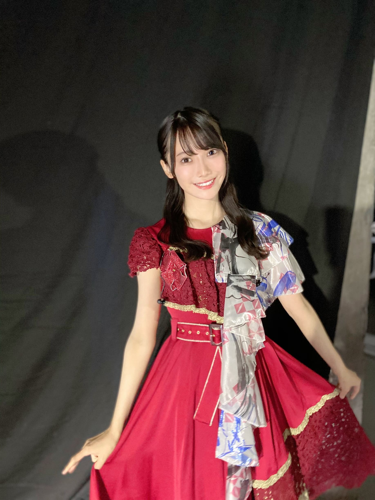
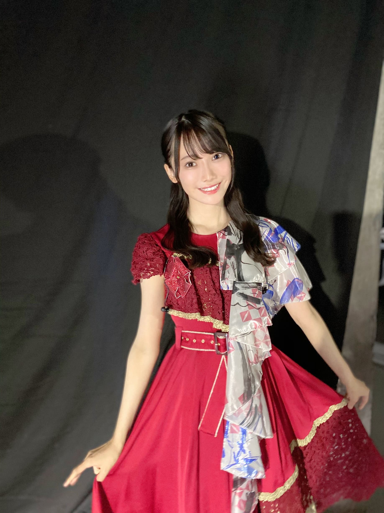
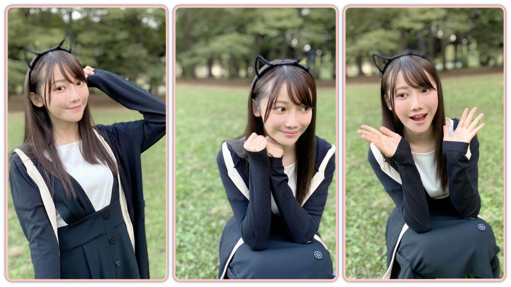
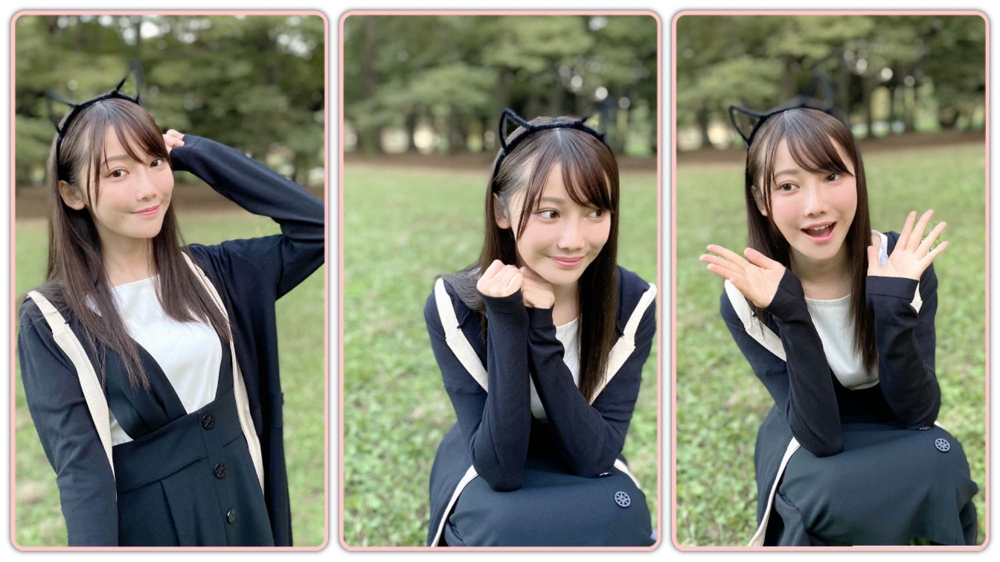

2020/1103Tue先輩方の優しさに涙した日...黒見明香(16)
今日はなんと漫画の日✨ 寒い中、今日も一日お疲れ様でした✩︎⡱
ココを見つけてくださり ありがとうございます♪
こつこつ 『鬼滅の刃』を揃えている
乃木坂46 新４期生の黒見明香です。
すこーしだけ自己紹介させてください☺︎
♪:*:･･:*:･･:*:･･:*:･･:*:･･:*:･♪:*:･･:*:･･:*:･･:*:･･:*:･･:*:･♪
黒見 明香（くろみ はるか）
2004年1月19日生まれ 16才
香港生まれ・東京都出身です
あだ名： くろみん・黒見ちゃん
3の倍数9・6・3(くろみ)
と覚えてもらえたら嬉しいです♪
＊
↓頂いたコメントから
◎ くろみんは２重跳び出来ますか？
実は、出来ないの〜( ´_ゝ`)うぅ...
かけっこはビリ、鉄棒の逆上がりも自転車も乗れずです。
体力テストでも『握力最低点』でした...Σ（ﾟдﾟll）
＊
小学生の時、缶入りの色鉛筆やクーピーが
上手く開けられなくて、
全力で何度も引っぱって、やっと開いたー！
...瞬間に、全部ぶちまける...
を繰り返していたら、迷惑すぎて、
周りの子が開ける当番となり、、、
ホントにごめんなさい\(//∇//)\
＊
唯一、柔軟性だけ 最高点だったのが、
嬉しすぎて忘れられない思い出なの♪
(コピーして部屋に貼ってましたっー(*ˊᵕˋ*)੭ 笑）
♪:*:･･:*:･･:*:･･:*:･･:*:･･:*:･♪:*:･･:*:･･:*:･･:*:･･:*:･･:*:･♪

-:-:୨୧:-:- 素敵な"初めての歌唱衣装"も、気付いたらダブルピース...( ´_ゝ`)
⚫︎今日はダブルピースがない！なので寂しいです...
カメラを向けられるとついやってしまう
ワンパターンの、ダブルピース・・\(//∇//)\
やっぱりあったよ〜笑
♬ *。♩*。♬

-:-:୨୧:-:- 「よしよし、"世界で一番孤独なLover"の深紅の衣装ではダブルピースしてないゾ」と思っていたら、しつこく指はうっかりピースでした....( ´_ゝ`)うそーん
ちょうど装置が私の目の前だったので、
リハーサル時、分かっているのに上から下からの勢いに、
先輩方が、瞬きもせず笑顔のままパフォーマンスされているのを見て、
⚫︎そのビブス俺もほしいもん。グッズとして売ってくれへんかな？笑
【 ノギザカスキッツACT2✨ 】
恥ずかしくて、人生黒歴史ベスト3に入る位だけど、、
『今までどこでも言ったことがない』ということで
マネージャーさんに大丈夫なのかご相談したところ...
♪:*:･･:*:･･:*:･･:*:･･:*:･･:*:･♪:*:･･:*:･･:*:･･:*:･･:*:･･:*:･♪

-:-:୨୧:-:-思い出写真・・・右下は白石麻衣さんのプロデュースTシャツを着た瑠奈ぴの背中を〜グッバイの文字が切なくて、思わずパシャリ(*´-`)
⚫︎はじける笑顔がすっごい似合うのでもっと笑ってね(＾◇＾)
♪:*:･･:*:･･:*:･･:*:･･:*:･･:*:･♪:*:･･:*:･･:*:･･:*:･･:*:･･:*:･♪
ブログやお手紙で、たくさんのコメントや感想送って下さり
本当にありがとうございます✩︎⡱
今回、初めてコメントしました！というあなたも、
こないだの続きの話だよー！と教えて下さるあなたも、
大切な時間を使ってお話しして下さり
本当にありがとうございます✨
あなたに出逢えた奇跡に、感謝しながら、
大事に、一つずつ全部読ませて頂いています((〃ω〃))
皆さんのことを知ることが出来る、
私の１日の中で『１番幸せな時間』です♩
直接お話しできる時が、 待ち遠しいです✩︎⡱
＊
祝日で少しほっとできたよー！という方も、
卒業コンサートロスで切なくなっちゃったり、
なんだか体調イマイチだよー、疲れちゃったよーって方も
本当に、今日も一日 お疲れ様でした✩︎⡱
きっと心も、身体も、しんどい時もあるかと思います。。
どうぞ、皆さんが 少しでも
ひとときリラックスできますように...✩︎⡱
と願っています(*´-`)
初めて会える日を、楽しみに待っています♪
＊
明日は、お芋を食べる姿も可愛い 璃果ちゃんですよー♬
読んでくださり、本当にありがとうございます☺︎
次回も、会えたら嬉しいなぁ✨
またねヾ(･ω･*)
くろみはるか☺︎
☆ 本日のあなたのラッキーナンバー：❺ と ❶
♪:*:･･:*:･･:*:･･:*:･･:*:･･:*:･♪:*:･･:*:･･:*:･･:*:･･:*:･･:*:･♪
・
・
・
＜ちょこっとアンコール♬笑＞
すごく長いので、時間ある時にでも☺︎笑
♬ *。♩*。♬
⚫︎みり愛ちゃんは『46時間TV』の電視台でも披露してたようにダンスがとても上手だから、振り付けとか判らなかったらみり愛ちゃんに聞くと良いよ
○ありがとう！そうするねヾ(･ω･*)o 躊躇してたら余計迷惑掛かっちゃうよね汗
優しい先輩方に、積極的に、質問するよう頑張ります！
♬ *。♩*。♬
⚫︎研修生ツアーから一年。先が見えない中でも一生懸命頑張ってくれてありがとう
○こちらこそだよ〜(*´-`)ありがとう。。。
先が見えない中「得体の知れないわたし達(©︎奈於ちゃん）」を見守って下さり、応援して下さり、本当にありがとう。
Overtureがかかる中、「お客様、来てくださっているかなぁ...」「チケット買ってしまって後悔していないかなぁ...」とぐるぐる考えながら一歩踏み出していった時に、
会場で、色とりどりの、三つの坂が混ざったサイリウムを振って、手作りのグッズを掲げて、"がんばれ〜！！！と声を出し、応援してくださった風景は、一生忘れません✨
♬ *。♩*。♬
⚫︎名前ですが、あすかちゃんと思っていたら、はるかちゃんなんですね。。。
⚫︎黒見さんのお名前の由来は何ですか？
♬ *。♩*。♬
⚫︎200回目のコメントになりました。ブログを読んで、コメントする事が本当に楽しく感じます。
○すごい✨わたしも、みんなのコメントを読んで、お話できるのがすっごく楽しいの〜☺︎
（よく「短くてごめんね」て書いてくれるのだけど、無理しないで"元気だよ"の一言でも、ほっとして嬉しいよヾ(･ω･*)oありがとう♪）
♬ *。♩*。♬
⚫︎くろみんは今年もいい子だったの？
じゃないとそもそもサンタさんが来ないよ～～（笑）
○たしかに・・・Σ（ﾟдﾟll）
残り２ヶ月、気が抜けない・・・笑
みんなにもサンタさん✨が来ますようにー!!
♬ *。♩*。♬
⚫︎逆立ちの練習のお話しが大好きです。
いつか再現した写真アップしていただけたら永遠に笑顔になれます。
⚫︎ファンネームそろそろ決まった？
ワイはくろみ〜ずがいいと思うわ！
○タイミングに悩んでるよー^^;
⚫︎いまメンバー間で流行ってることとかある？
○楽屋でよくさつま芋（干し芋）や甘栗をよく食べているメンバーが多いよ♬
⚫︎ハロウィン、お菓子作りしましたか？♡
⚫︎初めて買った乃木坂のグッズってなんですか？覚えてますかね？笑
○やっぱり定番、サイリウムだよーヾ(･ω･*)o
⚫︎くろみんは駅伝見ましたか？
♬ *。♩*。♬
部活の大会や、体育祭、授業や課題頑張ってるよというお話しや、5連勤、バイト疲れたよ〜や、英検・ワープロ検定頑張るよーて決意、席替えで前になっちゃったや体調回復の為頑張ってるよー！てエピソードもお話ししてくれてありがとう。一つ一つ、大切に読ませていただいてるよ〜✨
愛用マグカップのお話や、揚げパンのこと、刀剣乱舞や、男性ファッションのこと、「白」の時代、部活の先輩のこと、出会いを大切にという教訓も、宇宙と光のスピードのお話もすごく興味深く読ませて頂いたよーヾ(･ω･*)o
そして、お誕生日を迎えるあなたへ・・
✨HAPPY BIRTHDAY✨
どうぞ素敵な一年になりますよう✩︎⡱
♪:*:･･:*:･･:*:･･:*:･･:*:･･:*:･♪:*:･･:*:･･:*:･･:*:･･:*:･･:*:･♪
ここまで読んでくださったアナタ、ほんとうにありがとう♡
またねヾ(･ω･*)
ココを見つけてくださり ありがとうございます♪
こつこつ 『鬼滅の刃』を揃えている
乃木坂46 新４期生の黒見明香です。
すこーしだけ自己紹介させてください☺︎
♪:*:･･:*:･･:*:･･:*:･･:*:･･:*:･♪:*:･･:*:･･:*:･･:*:･･:*:･･:*:･♪
黒見 明香（くろみ はるか）
2004年1月19日生まれ 16才
香港生まれ・東京都出身です
あだ名： くろみん・黒見ちゃん
3の倍数9・6・3(くろみ)
と覚えてもらえたら嬉しいです♪
＊
↓頂いたコメントから
◎ くろみんは２重跳び出来ますか？
実は、出来ないの〜( ´_ゝ`)うぅ...
かけっこはビリ、鉄棒の逆上がりも自転車も乗れずです。
体力テストでも『握力最低点』でした...Σ（ﾟдﾟll）
＊
小学生の時、缶入りの色鉛筆やクーピーが
上手く開けられなくて、
全力で何度も引っぱって、やっと開いたー！
...瞬間に、全部ぶちまける...
を繰り返していたら、迷惑すぎて、
周りの子が開ける当番となり、、、
ホントにごめんなさい\(//∇//)\
＊
唯一、柔軟性だけ 最高点だったのが、
嬉しすぎて忘れられない思い出なの♪
(コピーして部屋に貼ってましたっー(*ˊᵕˋ*)੭ 笑）
♪:*:･･:*:･･:*:･･:*:･･:*:･･:*:･♪:*:･･:*:･･:*:･･:*:･･:*:･･:*:･♪
-:-:୨୧:-:- 素敵な"初めての歌唱衣装"も、気付いたらダブルピース...( ´_ゝ`)
⚫︎今日はダブルピースがない！なので寂しいです...
カメラを向けられるとついやってしまう
ワンパターンの、ダブルピース・・\(//∇//)\
やっぱりあったよ〜笑
♬ *。♩*。♬
前回のブログは、卒業コンサート翌日に
白石麻衣さん♡ 中田花奈さん♡へ、そして
乃木坂を支えて一緒に歩んでくださるあなたへの
あふれる想いと感謝を、そのままお話しさせて頂きました✩︎⡱
コンサート翌日のありがとうはココだよ〜☺︎↓
＊
今回は、そんなコンサートの
こぼれ話や裏話を、お話しさせてくださいね (*ˊᵕˋ*)੭
♬ *。♩*。♬
⚫︎まいやんも後輩たちが一生懸命リハしてくれてるって言ってたように、動き揃ってた！！
⚫︎ダンス一生懸命真面目に練習したのがわかりますよ。もっと観たいな？
⚫︎ダンス一生懸命真面目に練習したのがわかりますよ。もっと観たいな？
さくちゃん、かっきー、やんちゃん、レイちゃん、せいらちゃん...と11人の仲間がリードしてくれて、放課後集まって自主練習で教えて貰ったり、動画でダンスをチェックしてくれて、修正点やアドバイスを分かりやすく教えてくれて、、、本当に有難かったです。
今まで経験してきた経験、重ねてきた努力の凄さをあらためて実感し、こうして当たり前のように、"出来る人が後から来たメンバーに教えてくれる"のが嬉しくて、感動し、一層「白石麻衣さんの卒業コンサートを最高の形でお送りせねば！」と気持ちが引き締まりました。
＊
⚫︎白石さんと写真は撮れましたかー？
本当に嬉しいことに「とりましょ、とりましょ〜♡」と
優しく仰ってくださって、一生の宝物ができました(*´-`)
それから後日、ずうずうしくも、
ずっとお伝えしたかったお礼をお伝えさせて頂いたら...
"黒見ちゃん"と呼んでくださって、
"一生懸命な姿を見て応援したくなったよ！"
と伝えてくださいました。
見ていて下さったことに、
白石さんの心の温かさ、優しさに、
感動で、"こんなことがあるのか..."と震えました。。。
＊
お誕生日を迎えられたみり愛さん♡が
"実はリハから見てたんだよ" と伝えて下さり、
"分からないことあったら、いつでも聞きにおいで"
と心強く お話ししてくださいます。
＊
自分のことでいっぱいいっぱいで、
周りを見る余裕も、ズレにも気付けていない、
下手すぎる新メンバーたちのことも、、
こうして見ててくださる先輩方がいる。。
後ろをついてきてる、迷いがちな頼りない後輩を、
振り返って見守っててくださる、
当たり前のように、手を差し伸べてくださる...
乃木坂の優しさに感激し、心がじわーっと温かくなって
涙がこぼれました...(´•ω•̥`)
＊
以前、ここの ブログコメントに、
「学校で、どうやって友達をつくったらいい？」
「人見知りで、職場でどうやって話したらいい？」
という悩みを書いてくれました。
お返事になるか分からないけれど、
きっと「どこかで見ててくれる人はいるよ」という
小さい時の外国でのエピソードを、書いていました。。
帰国後、周りに馴染めなかったころのお話↓
＊
どうか、今、長すぎるこの説明下手なブログ(ごめんね)を読んでいる、
乃木坂を囲んでくださる家族である"あなた" のこと、
わたしも、そして周りにも、"必ず見ている人がいるよ！"
って少しでも伝わったら嬉しいなぁ...(*´-`)✨
もし辛いことやしんどいことがあった時も、
一緒に手を取り合って、励ましあって！
これからも坂を上って行けたら嬉しいな。。。と
乃木坂の大好きな先輩方が届けてくださる温かさ、優しさに
心震わせながら、あらためて思った出来事でした... ｡ﾟ(｡ﾉω＼｡)ﾟ｡
♬ *。♩*。♬
⚫︎愛する人への一番の恩返しは、成長した自分を見せることです！
⚫︎まいやんやかなさんが安心して乃木坂を見守ってくれるように頑張ってね？
⚫︎まいやんやかなさんが安心して乃木坂を見守ってくれるように頑張ってね？
再びお会いできた時に「成長したね！」「やっぱ乃木坂だな」
と言っていただけることを目標に
これからも先輩方の背中を見習って、
必死に努めたいです (. ≧ω≦)ﾉ
＊
オフィシャルサイト、Instagram やスタッフさんのtwitterも開設され、
これからの白石麻衣さんのご活躍も、楽しみですね♪
一緒にわくわくしましょうねー (*ˊᵕˋ*)੭
白石麻衣さん♡オフィシャルサイト✨↓
♪:*:･･:*:･･:*:･･:*:･･:*:･･:*:･♪:*:･･:*:･･:*:･･:*:･･:*:･･:*:･♪

-:-:୨୧:-:- 「よしよし、"世界で一番孤独なLover"の深紅の衣装ではダブルピースしてないゾ」と思っていたら、しつこく指はうっかりピースでした....( ´_ゝ`)うそーん
♬ *。♩*。♬
⚫︎真夏さんはキャプテンということで、自分の感情は置いといて
周囲を沢山気遣っていたんだね？
秋元真夏さん♡は、9年以上一緒に過ごし、共に闘ってきた、
白石麻衣さんとの大切なお別れの時を、きっと真夏さんご自身よりも、
見送ってくださる全国の・海外のファンの方々のことを、
コンサートをつくって下さるスタッフの方々のことを、
メンバー全員のことを、
気遣い、寂しい気持ちに寄り添ってくださって...
最後まで、元気な笑顔で励ましてくださいました ><
＊
真夏さん♡と初めてお話させて頂いた、2月の配属発表の日、
真夏さんがより良い番組にするために、
スタッフの方々と最後まで調整し、
アドバイスされてた姿が、すごく印象に残っています。
坂道グループのお姉さん 乃木坂46のキャプテンとは
本当に凄いんなぁ...といつもカッコいいお姿に
見惚れ、尊敬しています (*ˊᵕˋ*)੭ ✨
♬ *。♩*。♬
⚫︎ライブやリハの裏エピソード教えてほしいな～？
本編最後の、とっても盛り上がる「ガールズルール」で
特殊効果が「ドォ〜ン」「ドォ〜ン」と計７、８回鳴って、
床からは火花と煙が噴き出て、
本編最後の、とっても盛り上がる「ガールズルール」で
特殊効果が「ドォ〜ン」「ドォ〜ン」と計７、８回鳴って、
床からは火花と煙が噴き出て、
天井から滝状に花火が噴き出る 演出がありました✨
＊
ちょうど装置が私の目の前だったので、
リハーサル時、分かっているのに上から下からの勢いに、
"うわぁぁ〜"と驚いて、ビクビクしてしまっていたのですが、
先輩方が、瞬きもせず笑顔のままパフォーマンスされているのを見て、
感激していました・・・
本番、出来るだけ笑顔のまま、ガルルの楽しさを届けられるよう
平静を装っていたのですが・・・果たして出来てたのかな\(//∇//)\笑
これからも、もっともっと強いハートで
堂々と、大好きな乃木坂の曲を皆さんに届けられるよう
頑張りますねー (*ˊᵕˋ*)੭
＊
皆さんと大好きな先輩方にいただいた
あったかいかけがえのない時間・・・
大切に大切に力にして、これからいっそう乃木坂のために
頑張りたいです (. ≧ω≦)ﾉ
最後まで見てくださった方も、心で応援してくださった方も、
本当に、本当にありがとうございました✩︎⡱
♬ *。♩*。♬
⚫︎そのビブス俺もほしいもん。グッズとして売ってくれへんかな？笑
それ良いですねー！！
公式グッズの "乃木坂46ジャージ" と共に、
メンバーと皆さんお揃いのビブスもあったら、
リハーサルや乃木坂工事中チャレンジできちゃいますよね♪
友達と運動会したいです (*ˊᵕˋ*)੭笑
♪:*:･･:*:･･:*:･･:*:･･:*:･･:*:･♪:*:･･:*:･･:*:･･:*:･･:*:･･:*:･♪

-:-:୨୧:-:- ちょっぴり遅いハロウィン風、猫耳風のカチューシャでタイマー写真撮ってみたよ〜♪（何故か背景に溶けちゃったよー^^;笑）
♪:*:･･:*:･･:*:･･:*:･･:*:･･:*:･♪:*:･･:*:･･:*:･･:*:･･:*:･･:*:･♪

-:-:୨୧:-:- ちょっぴり遅いハロウィン風、猫耳風のカチューシャでタイマー写真撮ってみたよ〜♪（何故か背景に溶けちゃったよー^^;笑）
【 ノギザカスキッツACT2✨ 】
⚫︎半年間という１クールで終わりかっ！と思ったら、めっちゃ嬉しい！
⚫︎ノギスキ２期、くろみん主体のコントがあるよう祈ってます！
⚫︎ノギスキ２期、くろみん主体のコントがあるよう祈ってます！
テレビ放送、Huluを見てくださって、投票や番組＃でつぶやいて
盛り上げてくださったあなたのおかげです〜ヾ(･ω･*)o
ACT2では、大好きな憧れの３期生の先輩方を見習って、学んで、
自分の殻を破った成長した姿をお見せできるように
挑戦したいです！悟空モノマネみたく、スベってるかもしれないですが、
見守ってくださいね\(//∇//)\笑
♬ *。♩*。♬
⚫︎乃木坂どこへ1.2購入特典DVD別冊乃木坂どこへが当たってました。
⚫︎めっちゃ面白かった、くろみんのカミングアウトめっちゃ笑った、
⚫︎めっちゃ面白かった、くろみんのカミングアウトめっちゃ笑った、
限定のDVD当たった方おめでとうございますー!!
恥ずかしくて、人生黒歴史ベスト3に入る位だけど、、
『今までどこでも言ったことがない』ということで
マネージャーさんに大丈夫なのかご相談したところ...
『私は面白いと思う(๑˃̵ᴗ˂̵)笑！』
と賛成して下さいました\(//∇//)\
どうぞ、「別冊乃木坂どこへ」も楽しんでくださいね〜☺︎
♪:*:･･:*:･･:*:･･:*:･･:*:･･:*:･♪:*:･･:*:･･:*:･･:*:･･:*:･･:*:･♪
-:-:୨୧:-:-思い出写真・・・右下は白石麻衣さんのプロデュースTシャツを着た瑠奈ぴの背中を〜グッバイの文字が切なくて、思わずパシャリ(*´-`)
⚫︎髪型、ちょっと巻いている...のかな?
後ろ姿で、こんな感じに、サイドの髪をねじねじして貰って
後ろで留めて、ゆるーく巻いて貰ったよー！
＊
リハーサルではおろしていたのですが、
白石さん♡と目を合わせる時に、
耳にかけてた髪がバサッとかかっちゃって
見え辛かったので、
大切なひとときの為、
メイクさんに、留めていただきました(*´-`)✨
いつもヘアメイクの魔法をかけてくださること
とっても幸せです♡ありがとうございます。
♬ *。♩*。♬
⚫︎はじける笑顔がすっごい似合うのでもっと笑ってね(＾◇＾)
卒業コンサートでは、涙を堪えて
ぎこちなくなってしまって、反省しています。
また、実はノギザカスキッツや番組で、爆笑しすぎてて汗
乃木坂のイメージ変わっちゃったら申し訳ないなぁ...と
なるべく控えめに抑えていたりしました。。。
＊
先輩方を見習って、無理につくったり抑えたりしないで、
自然体で、楽しみたいな！て思ったよ (*ˊᵕˋ*)੭
笑顔のコメントアドバイス下さったみんな、ありがとうー!!
♬ *。♩*。♬
⚫︎anan予約したよー！
ありがとうございます。
明日 11月4日発売の『anan』 2224号に、
「女子の流行モノ'20秋! 」として乃木坂メンバーみんなで
掲載して頂いています。
新４期生は「乃木坂46メンバー全員の「マイブーム」名鑑!」
何が採用されたかな〜？
わたしも楽しみに明日熟読します〜☺︎
♬ *。♩*。♬
今週土曜日には、いよいよ かっきーが頑張ったドラマ
「よるドラ『閻魔堂沙羅の推理奇譚』」が放送ですね♪
ミステリードキドキですね✩︎⡱ 一緒に見ようねー (*ˊᵕˋ*)੭
♪:*:･･:*:･･:*:･･:*:･･:*:･･:*:･♪:*:･･:*:･･:*:･･:*:･･:*:･･:*:･♪
ブログやお手紙で、たくさんのコメントや感想送って下さり
本当にありがとうございます✩︎⡱
今回、初めてコメントしました！というあなたも、
こないだの続きの話だよー！と教えて下さるあなたも、
大切な時間を使ってお話しして下さり
本当にありがとうございます✨
あなたに出逢えた奇跡に、感謝しながら、
大事に、一つずつ全部読ませて頂いています((〃ω〃))
皆さんのことを知ることが出来る、
私の１日の中で『１番幸せな時間』です♩
直接お話しできる時が、 待ち遠しいです✩︎⡱
＊
祝日で少しほっとできたよー！という方も、
卒業コンサートロスで切なくなっちゃったり、
なんだか体調イマイチだよー、疲れちゃったよーって方も
本当に、今日も一日 お疲れ様でした✩︎⡱
きっと心も、身体も、しんどい時もあるかと思います。。
どうぞ、皆さんが 少しでも
ひとときリラックスできますように...✩︎⡱
と願っています(*´-`)
初めて会える日を、楽しみに待っています♪
＊
明日は、お芋を食べる姿も可愛い 璃果ちゃんですよー♬
読んでくださり、本当にありがとうございます☺︎
次回も、会えたら嬉しいなぁ✨
またねヾ(･ω･*)
くろみはるか☺︎
☆ 本日のあなたのラッキーナンバー：❺ と ❶
♪:*:･･:*:･･:*:･･:*:･･:*:･･:*:･♪:*:･･:*:･･:*:･･:*:･･:*:･･:*:･♪
・
・
・
＜ちょこっとアンコール♬笑＞
すごく長いので、時間ある時にでも☺︎笑
♬ *。♩*。♬
⚫︎みり愛ちゃんは『46時間TV』の電視台でも披露してたようにダンスがとても上手だから、振り付けとか判らなかったらみり愛ちゃんに聞くと良いよ
○ありがとう！そうするねヾ(･ω･*)o 躊躇してたら余計迷惑掛かっちゃうよね汗
優しい先輩方に、積極的に、質問するよう頑張ります！
♬ *。♩*。♬
⚫︎研修生ツアーから一年。先が見えない中でも一生懸命頑張ってくれてありがとう
○こちらこそだよ〜(*´-`)ありがとう。。。
先が見えない中「得体の知れないわたし達(©︎奈於ちゃん）」を見守って下さり、応援して下さり、本当にありがとう。
Overtureがかかる中、「お客様、来てくださっているかなぁ...」「チケット買ってしまって後悔していないかなぁ...」とぐるぐる考えながら一歩踏み出していった時に、
会場で、色とりどりの、三つの坂が混ざったサイリウムを振って、手作りのグッズを掲げて、"がんばれ〜！！！と声を出し、応援してくださった風景は、一生忘れません✨
♬ *。♩*。♬
⚫︎名前ですが、あすかちゃんと思っていたら、はるかちゃんなんですね。。。
⚫︎黒見さんのお名前の由来は何ですか？
読みづらいよね^^;;
2004年の旧正月に、香港で生まれました。
町は、新型肺炎SARSを収束させるため戦っていました。
そんな大変な中、色々な国の方が、弱い赤ちゃんを助けようと、専用の出入口を作ったり、貴重なマスクや食料を差し入れて、皆んなでわたしを育ててくれました。
そんな香港の周りの方への感謝の気持ちを「香」に、
明るい春が来ますように・・という願いを込めて
「明香（はるか）」と名付けられたそうです。
＊生まれた時のエピソードだよ〜☺︎↓
♬ *。♩*。♬
⚫︎200回目のコメントになりました。ブログを読んで、コメントする事が本当に楽しく感じます。
○すごい✨わたしも、みんなのコメントを読んで、お話できるのがすっごく楽しいの〜☺︎
（よく「短くてごめんね」て書いてくれるのだけど、無理しないで"元気だよ"の一言でも、ほっとして嬉しいよヾ(･ω･*)oありがとう♪）
♬ *。♩*。♬
⚫︎くろみんは今年もいい子だったの？
じゃないとそもそもサンタさんが来ないよ～～（笑）
○たしかに・・・Σ（ﾟдﾟll）
残り２ヶ月、気が抜けない・・・笑
みんなにもサンタさん✨が来ますようにー!!
♬ *。♩*。♬
⚫︎逆立ちの練習のお話しが大好きです。
いつか再現した写真アップしていただけたら永遠に笑顔になれます。
○タイマーか、誰かに撮ってもらえるよう、頑張ってみるね\(//∇//)\笑
「かべ逆立ち」のお話はココ☺︎笑↓
♬ *。♩*。♬
⚫︎ファンネームそろそろ決まった？
ワイはくろみ〜ずがいいと思うわ！
○タイミングに悩んでるよー^^;
ずっと待たせてごめんねー!!
♬ *。♩*。♬
⚫︎いまメンバー間で流行ってることとかある？
○楽屋でよくさつま芋（干し芋）や甘栗をよく食べているメンバーが多いよ♬
璃果ちゃんのロケも可愛かったねー！
⚫︎ハロウィン、お菓子作りしましたか？♡
○ううん、前回の干し芋アレンジから作れていないの〜汗
冬っぽい温かいの作りたいなー！
♬ *。♩*。♬
⚫︎初めて買った乃木坂のグッズってなんですか？覚えてますかね？笑
○やっぱり定番、サイリウムだよーヾ(･ω･*)o
電池の入れ方、カラーチェンジ、慣れるまで焦るよね笑
♬ *。♩*。♬
♬ *。♩*。♬
⚫︎くろみんは駅伝見ましたか？
○見ましたー！佐藤楓さん♡お話もかっこいいですよね✨
お正月の箱根駅伝もすごく楽しみだねーヾ(･ω･*)o
♬ *。♩*。♬
♬ *。♩*。♬
⚫︎友達の誕生日なんだけど、どんな誕生日プレゼントがいいと思う？？
今考えてるのはコスメなんだけどおすすめあったら教えて欲しいな〜
小さなミラーとかヘアアクセとかクリスマスのも,,,色々可愛いよね〜(*´-`)
悩んじゃって回答になってなくてごめんね汗
その子のことを考えて選んでくれてる時間が嬉しいなって思うよ〜✨
（前回のお誕生日プレゼント、これにしたんだよー！って素敵な報告もありがとう）
♬ *。♩*。♬
＜ゲームコーナー✨＞
⚫︎ プロスピのアニバ第2弾いい引きができるといいね！
くろみんもいい選手を獲得出来ますように
プロスピアニバ2弾どうだった〜？
プロスピ60連どうだった？
⚪︎ありがとう！まずはスターロードを終わらせてその契約書を引いてからガチャを引くからもう少し待っててね〜☺︎
⚫︎ アニバ1000連したら選手コンプリート出来たよ笑笑
⚪︎コンプリートできるのすごいね！
エナジー集めお疲れ様だね☺︎
⚫︎ 選択契約書で誰取る予定？
⚪︎セカンドの選手かなぁ
あなたはもう決めた？
⚫︎ プロ野球スピリッツを始めたきっかけってなんでしたっけ？？？
⚪︎ もともとゲーム好きでプロ野球を見てたら、やってみたいなっていう気持ちになったからはじめたよ〜
⚫︎ くろみんはスイッチの「マリオカート ライブ ホームサーキット」って言うゲームやったことありますか？
⚪︎やったことはないけど、知ってるよ！
スイッチの他のゲームも挑戦してみたいな〜
⚫︎くろみんはプレステでサッカーゲームした事ある？
⚪︎まだないよ〜！ プレステでプロ野球スピリッツ、サッカーゲーム両方やってみたいなぁ
⚫︎ あつ森の近況を教えて下さい？
⚪︎10月31日には住民にキャンディーあげてパンプキングと住民からDIYとか家具とかもらったよ〜！あなたはあつもりでハロウィンのイベントやったのかな？
⚫︎ プロスピのアニバ第2弾いい引きができるといいね！
くろみんもいい選手を獲得出来ますように
プロスピアニバ2弾どうだった〜？
プロスピ60連どうだった？
⚪︎ありがとう！まずはスターロードを終わらせてその契約書を引いてからガチャを引くからもう少し待っててね〜☺︎
⚫︎ アニバ1000連したら選手コンプリート出来たよ笑笑
⚪︎コンプリートできるのすごいね！
エナジー集めお疲れ様だね☺︎
⚫︎ 選択契約書で誰取る予定？
⚪︎セカンドの選手かなぁ
あなたはもう決めた？
⚫︎ プロ野球スピリッツを始めたきっかけってなんでしたっけ？？？
⚪︎ もともとゲーム好きでプロ野球を見てたら、やってみたいなっていう気持ちになったからはじめたよ〜
⚫︎ くろみんはスイッチの「マリオカート ライブ ホームサーキット」って言うゲームやったことありますか？
⚪︎やったことはないけど、知ってるよ！
スイッチの他のゲームも挑戦してみたいな〜
⚫︎くろみんはプレステでサッカーゲームした事ある？
⚪︎まだないよ〜！ プレステでプロ野球スピリッツ、サッカーゲーム両方やってみたいなぁ
⚫︎ あつ森の近況を教えて下さい？
⚪︎10月31日には住民にキャンディーあげてパンプキングと住民からDIYとか家具とかもらったよ〜！あなたはあつもりでハロウィンのイベントやったのかな？
♬ *。♩*。♬
あなたのオススメの曲、ZARDさん、爆風スランプさん、嵐さん、LiSAさん、FUNKY MONKEY BABYSさん...教えてくれてありがとう！素敵な曲がたくさん聴けて嬉しいな(*´-`)
部活の大会や、体育祭、授業や課題頑張ってるよというお話しや、5連勤、バイト疲れたよ〜や、英検・ワープロ検定頑張るよーて決意、席替えで前になっちゃったや体調回復の為頑張ってるよー！てエピソードもお話ししてくれてありがとう。一つ一つ、大切に読ませていただいてるよ〜✨
愛用マグカップのお話や、揚げパンのこと、刀剣乱舞や、男性ファッションのこと、「白」の時代、部活の先輩のこと、出会いを大切にという教訓も、宇宙と光のスピードのお話もすごく興味深く読ませて頂いたよーヾ(･ω･*)o
◎紫×緑のサイリウムで応援したよー！モバイルの推しメンコレクション待ってるー！乃木恋のうさ耳GETしたよー！「隣になったのはきっと運命だよね」にキュンキュンしたーというお話も、恥ずかしいけど、すっごく嬉しかったよ((〃ω〃)) ありがとうー✩︎⡱
♬ *。♩*。♬
そして、お誕生日を迎えるあなたへ・・
✨HAPPY BIRTHDAY✨
どうぞ素敵な一年になりますよう✩︎⡱
♪:*:･･:*:･･:*:･･:*:･･:*:･･:*:･♪:*:･･:*:･･:*:･･:*:･･:*:･･:*:･♪
ここまで読んでくださったアナタ、ほんとうにありがとう♡
またねヾ(･ω･*)
2020/11/03 19:24
コメント(204)
くろみん可愛いよ
黒見ちゃんブログ更新ありがとう！
白石さんと写真撮れて良かったほんとに！しかも「黒見ちゃん」って呼ばれてるなんて！！
あとダブルピースしてないと思いきや指がうっかりダブルピースだなんて面白すぎる笑 これからもダブルピースは楽しみにしてまーす！
次回のブログ更新も楽しみにしています。体だけには気をつけてください。応援しています。ありがとうございました。
質問
お得意のダブルピースお願いします！
もう冬になりそうだけど、黒見ちゃんの冬と言えば何ですかー？
白石さんと写真撮れて良かったほんとに！しかも「黒見ちゃん」って呼ばれてるなんて！！
あとダブルピースしてないと思いきや指がうっかりダブルピースだなんて面白すぎる笑 これからもダブルピースは楽しみにしてまーす！
次回のブログ更新も楽しみにしています。体だけには気をつけてください。応援しています。ありがとうございました。
質問
お得意のダブルピースお願いします！
もう冬になりそうだけど、黒見ちゃんの冬と言えば何ですかー？
待ってましたー！
今日はインド料理を食べてきたよー！
今日はインド料理を食べてきたよー！
黒みんブログありがとう！
黒見ちゃん！ブログ更新ありがとう❤︎
質問にも答えてくれてありがとう。誕プレじっくり考えてみるね！黒見ちゃんの意見も参考にさせてもらう！てか参考にする以外の選択肢ないよ
この前82km歩くって話したと思うんだけどこの土日で行ってきました！！もう地獄でした泣足が棒になるってこういうことだなって思ったし寝返りも打てなくて辛かった でもこんな距離歩いたから私はもうできないことないって思って今は明日までのレポート課題に取りかかってるよ！笑
●先輩と撮った写真はありますか？？
できたらでいいから見せてほしいな〜！
質問にも答えてくれてありがとう。誕プレじっくり考えてみるね！黒見ちゃんの意見も参考にさせてもらう！てか参考にする以外の選択肢ないよ
この前82km歩くって話したと思うんだけどこの土日で行ってきました！！もう地獄でした泣足が棒になるってこういうことだなって思ったし寝返りも打てなくて辛かった でもこんな距離歩いたから私はもうできないことないって思って今は明日までのレポート課題に取りかかってるよ！笑
●先輩と撮った写真はありますか？？
できたらでいいから見せてほしいな〜！
くろみん
こんばんは。
祝日でした。くろみんはお仕事などあったのかな?
今日も一日お疲れ様。
ブログ更新ありがとう!
へ～、「鬼滅の刃」を揃えているんだ。
自分も友達に進められて、読みました。
泣けたり、ちょっと笑えたり…とても面白いよね!
他にも好きな漫画はあるのかな?
うっかりピースの写真、笑いました(笑)
( ´_ゝ`)うそーん
またコメントしますﾉｼ
#205
こんばんは。
祝日でした。くろみんはお仕事などあったのかな?
今日も一日お疲れ様。
ブログ更新ありがとう!
へ～、「鬼滅の刃」を揃えているんだ。
自分も友達に進められて、読みました。
泣けたり、ちょっと笑えたり…とても面白いよね!
他にも好きな漫画はあるのかな?
うっかりピースの写真、笑いました(笑)
( ´_ゝ`)うそーん
またコメントしますﾉｼ
#205
くろみちゃーん
黒見ちゃんほんと性格いい子……！
ブログ更新ありがとうございます！
ブログ更新ありがとうございます！
くろみん お疲れ様(_´Д｀)ﾉ~~ｵﾂｶﾚｰ
ありがとう！
早く話したいよ〜
今日も一日可愛い。
ありがとう！
早く話したいよ〜
今日も一日可愛い。
ブログ更新お疲れ様です！ 中学2年女子です
素敵なブログありがとうございます。そして私の質問にも答えてくださり嬉しいです
私はまだ「乃木坂工事中」を見たことがないので、今度録画して見てみます
黒見さんの、乃木坂46での推しメンは誰ですか？
体調に気をつけてくださいね
素敵なブログありがとうございます。そして私の質問にも答えてくださり嬉しいです
私はまだ「乃木坂工事中」を見たことがないので、今度録画して見てみます
黒見さんの、乃木坂46での推しメンは誰ですか？
体調に気をつけてくださいね
くろみん、こんばんは！
コメント、失礼します！
ブログ更新、ありがとう！
今日はまんがの日なんだね。
何でだろう、と思って調べてみたら手塚治虫先生の誕生日だからなのね。
漫画は全然読まないのよ。
小さい頃は「コロコロコミック」を買ってたんだけどなー。
今異様な程流行ってる鬼滅の刃も殆ど分からないです。
もう社会現象だから、ある程度知りたいとは思ってるんだけどねー。
俺も2重跳び出来ないよー。
仕方無いよね。
握力は中学生の頃毎日少しずつハンドグリップで鍛えてたら人並み位にはなれたよ。
もし握力が必要な機会が来たら、試してみると良いかも。
柔軟だけ得意なのも俺と一緒だ笑笑
ただ今は凝り固まってるからあんま上手く行かないかも笑笑
久し振りの(感覚狂ってきたかも笑笑)ダブルピースありがとうございます！
素敵な歌衣装で似合ってるなー。
まいやんと最後にやり取り出来たみたいで本当に良かった。
性格まで女神だよなぁ。
まいやんが見守ってくれてる、と思うと力が出そうだね。
続きはまた書きます！
それでは、この辺で。
おやすくろみんー
コメント、失礼します！
ブログ更新、ありがとう！
今日はまんがの日なんだね。
何でだろう、と思って調べてみたら手塚治虫先生の誕生日だからなのね。
漫画は全然読まないのよ。
小さい頃は「コロコロコミック」を買ってたんだけどなー。
今異様な程流行ってる鬼滅の刃も殆ど分からないです。
もう社会現象だから、ある程度知りたいとは思ってるんだけどねー。
俺も2重跳び出来ないよー。
仕方無いよね。
握力は中学生の頃毎日少しずつハンドグリップで鍛えてたら人並み位にはなれたよ。
もし握力が必要な機会が来たら、試してみると良いかも。
柔軟だけ得意なのも俺と一緒だ笑笑
ただ今は凝り固まってるからあんま上手く行かないかも笑笑
久し振りの(感覚狂ってきたかも笑笑)ダブルピースありがとうございます！
素敵な歌衣装で似合ってるなー。
まいやんと最後にやり取り出来たみたいで本当に良かった。
性格まで女神だよなぁ。
まいやんが見守ってくれてる、と思うと力が出そうだね。
続きはまた書きます！
それでは、この辺で。
おやすくろみんー
黒見ちゃん、赤の衣装に合うなぁ。
そして裏エピソードの質問に
答えてくれてありがとう～☻
インフルの炎とか花火とか
確かにびっくりするよね。
いつの日かなれて踊る日が来たら
これもきっと思いでだよね笑
そしてノギザカスキッツついに
三期生参戦～
楽しみすぎる～
祐希との共演今から楽しみにしてます！
そして裏エピソードの質問に
答えてくれてありがとう～☻
インフルの炎とか花火とか
確かにびっくりするよね。
いつの日かなれて踊る日が来たら
これもきっと思いでだよね笑
そしてノギザカスキッツついに
三期生参戦～
楽しみすぎる～
祐希との共演今から楽しみにしてます！
黒見ちゃんブログ更新ありがとう!
今回も凄く楽しく読まさせて貰いました！
黒見ちゃんのブログ全部纏めたら本が出来るような気がします!
黒見ちゃん無理しないで頑張ってね！
バイバイ
今回も凄く楽しく読まさせて貰いました！
黒見ちゃんのブログ全部纏めたら本が出来るような気がします!
黒見ちゃん無理しないで頑張ってね！
バイバイ
11月に入りましたね！
今年も残り2ヶ月٩( 'ω' )وばんがろ〜
今年も残り2ヶ月٩( 'ω' )وばんがろ〜
ブログ更新ありがとう！
先輩から学べる環境はすごく大切
だと思うよ！
これからもたくさん先輩から学んで少し
ずつ坂を登っていけるといいね！
プロスピのアニバはまだ引いてないんだね
自分は選択契約書の福袋を引く予定だった
けど、後少しエナジーためて60連引くことに
したよー
寒くなってきたけど体調には気をつけてね！
先輩から学べる環境はすごく大切
だと思うよ！
これからもたくさん先輩から学んで少し
ずつ坂を登っていけるといいね！
プロスピのアニバはまだ引いてないんだね
自分は選択契約書の福袋を引く予定だった
けど、後少しエナジーためて60連引くことに
したよー
寒くなってきたけど体調には気をつけてね！
お疲れ様です!
くろみん、ブログ更新おつかれーーー！！
まいやんは本当に偉大ですよね。。。。出会いがあれば別れもあるけど、そもそも乃木坂で素敵な人に出会えている時点で皆さん持ってるなぁ…なんて思ったりしてます！
そして、乃木坂スキッツ第2弾おめでとーーー！本当に面白くて毎週リアタイで頑張ってるのでマジで嬉しかった！
じゃあ！また！！
まいやんは本当に偉大ですよね。。。。出会いがあれば別れもあるけど、そもそも乃木坂で素敵な人に出会えている時点で皆さん持ってるなぁ…なんて思ったりしてます！
そして、乃木坂スキッツ第2弾おめでとーーー！本当に面白くて毎週リアタイで頑張ってるのでマジで嬉しかった！
じゃあ！また！！
くろみん、ブログ更新ありがとう‼
卒コンの裏話とか聞けて嬉しい！！
衣装すごい似合ってる
乃木坂46に馴染んできたかな？
まだしんどさが取れんくて．．
頑張るね！！
愛媛県在住 中３女子 音より
追伸：今日も一日お疲れ様！
卒コンの裏話とか聞けて嬉しい！！
衣装すごい似合ってる
乃木坂46に馴染んできたかな？
まだしんどさが取れんくて．．
頑張るね！！
愛媛県在住 中３女子 音より
追伸：今日も一日お疲れ様！
あ。
逆立ち練習のブログリンク
ありがとうございます。
わぁ〜い。
元気がでます。
何でもできちゃう優等生
なイメージがありますが
親しみやすく思えるのは
とっても魅力ですし沢山の
ファンの方々に愛される
大切な要素ですよね。
今。
ちょっと世の中が暗く
本当に大変な時期です。
黒見さんに救われている
人は必ず沢山います。
全てを確認する事はでき
ませんが必ず沢山います。
これからも笑顔を見せて
ください。
乃木坂でのご活躍を心から
願っております。
逆立ち練習のブログリンク
ありがとうございます。
わぁ〜い。
元気がでます。
何でもできちゃう優等生
なイメージがありますが
親しみやすく思えるのは
とっても魅力ですし沢山の
ファンの方々に愛される
大切な要素ですよね。
今。
ちょっと世の中が暗く
本当に大変な時期です。
黒見さんに救われている
人は必ず沢山います。
全てを確認する事はでき
ませんが必ず沢山います。
これからも笑顔を見せて
ください。
乃木坂でのご活躍を心から
願っております。
今日も更新ありがとう！❤︎
くろみちゃんの丁寧なブログやっぱり好きで最後まで読んじゃいます！(^^)♡
いつもたくさんありがとう〜〜
くろみちゃんのブログにいつも元気もらってます(^-^)/
これで明日も頑張れそう〜〜！
いつか直接会いに行きたいな、、、と思ってます(^^♪
最後にひとつ質問！
●どうやったら夢は叶うと思いますか？( ˘ᵕ˘ )
難しい質問でごめんね(^^; でもくろみちゃんの言葉だと元気が出るので、ぜひ聞かせてください♡
くろみちゃんの丁寧なブログやっぱり好きで最後まで読んじゃいます！(^^)♡
いつもたくさんありがとう〜〜
くろみちゃんのブログにいつも元気もらってます(^-^)/
これで明日も頑張れそう〜〜！
いつか直接会いに行きたいな、、、と思ってます(^^♪
最後にひとつ質問！
●どうやったら夢は叶うと思いますか？( ˘ᵕ˘ )
難しい質問でごめんね(^^; でもくろみちゃんの言葉だと元気が出るので、ぜひ聞かせてください♡
くろみん
こんばんはー☺
鬼滅の刃集めてるんだね！
俺はあんまり詳しくはないけど今映画もやってて店では、コラボもやってて凄い人気だよね！ちなみに主題歌を歌っているLiSAさんは結構聴いたりするよ！
まいやんの卒業コンサート
本当に今でも鮮明に覚えてるぐらい素敵なライブで皆のブログを読んでるとあの景色を思い出すよ。
まいやんもそうだし乃木坂のメンバーは、本当に優しくてくろみんのブログ読んでて俺はこんな乃木坂46を好きになれて心から幸せだなと思います！
前のコメントにも書いたけど
まいやんと花奈さんが安心して乃木坂を見守ってもらえるようにくろみんも頑張っていこうね☺️
でも写真撮れて本当に良かったね＼(^-^)／
ライブも写真も一生の宝物だね❗
それでは
また明日コメントするね☺️
今日新曲が発表されたね！
蓮加さんがセンターだね！楽しみだよ＼(^-^)／
こんばんはー☺
鬼滅の刃集めてるんだね！
俺はあんまり詳しくはないけど今映画もやってて店では、コラボもやってて凄い人気だよね！ちなみに主題歌を歌っているLiSAさんは結構聴いたりするよ！
まいやんの卒業コンサート
本当に今でも鮮明に覚えてるぐらい素敵なライブで皆のブログを読んでるとあの景色を思い出すよ。
まいやんもそうだし乃木坂のメンバーは、本当に優しくてくろみんのブログ読んでて俺はこんな乃木坂46を好きになれて心から幸せだなと思います！
前のコメントにも書いたけど
まいやんと花奈さんが安心して乃木坂を見守ってもらえるようにくろみんも頑張っていこうね☺️
でも写真撮れて本当に良かったね＼(^-^)／
ライブも写真も一生の宝物だね❗
それでは
また明日コメントするね☺️
今日新曲が発表されたね！
蓮加さんがセンターだね！楽しみだよ＼(^-^)／
くろみーん！ 更新ありがとう～
ちょっと遅くなったけどハッピーハロウィーン！
猫耳超超似合う！ かわいいよ～(^▽^)/
ライブの思い出、くろみんの思いがすっごく伝わってくくるよ、ありがとう
先輩や同期とのつながりがとても深まっている感じがして、本当に素敵だなーと思います！
駅伝見たんだね！
でんちゃんのおかげで駅伝詳しくなったよ～
箱根駅伝もぜひ見てねー
●ブログはいつもスマホで書いているの？ パソコンじゃないよね？
（いつもたくさん書いてくれるから気になりました）
anan到着待ちでーす
スキッツも始まるし、またいろんなくろみん見られるの楽しみにしているね！
じゃあね～(@^^)/~~~
ちょっと遅くなったけどハッピーハロウィーン！
猫耳超超似合う！ かわいいよ～(^▽^)/
ライブの思い出、くろみんの思いがすっごく伝わってくくるよ、ありがとう
先輩や同期とのつながりがとても深まっている感じがして、本当に素敵だなーと思います！
駅伝見たんだね！
でんちゃんのおかげで駅伝詳しくなったよ～
箱根駅伝もぜひ見てねー
●ブログはいつもスマホで書いているの？ パソコンじゃないよね？
（いつもたくさん書いてくれるから気になりました）
anan到着待ちでーす
スキッツも始まるし、またいろんなくろみん見られるの楽しみにしているね！
じゃあね～(@^^)/~~~
可愛いい！
くろみ～ん♪今日も一日、おうち時間を楽しんでたかぁ～いヽ(^o^)丿 そして、ブログ更新ありがとう。
って、今日のブログ。お兄ちゃんである僕の心にも響いたぞぉ～( *´艸｀) 何がぁ～？って？
そりゃ～もちろん。僕は「１８～２８歳」まで、「手話指導者」というキャプテンの座にいたし、手探り状態で「どう指導しようか？・メンバーは集まってくれるだろうか？」という不安がある中指導者としてやってきた経験があるし今回のくろみんブログはそんな時の僕の感情によく似てたし、くろみんのその「先輩たちに対する想い」が伝わってきて、なおかつ「自分自身の悪い点」も見出していて、僕は「今日のくろみん！先輩の卒業を経て、なんか成長したかっ！Σ(･ω･ﾉ)ﾉ！」っていう位驚きを隠せなかった。
唯一僕が、今日のくろみんブログを読んでいて感じ取っていたのは。
「くろみん。もっと自分自身の「喜怒哀楽」を表に出してった方が、これからもっと成長できると思うし、逆に我慢してたら、言いたい事もあっという間に水のように流れていってしまって、なかったことにされるよ？」
っていう事を感じたなぁ～。笑顔も「先輩の卒業」という事と重なり「ぎこちない笑顔」になっていたり「演出でビクビクしながら踊ってた」っていうのが、ちょっと気になっちゃった。
でもくろみんは、今年の「バスラ」以来のコンサートで２回目のコンサートが「先輩の卒コン」という貴重なものだったから、余計に感情が入り乱れてたのかもしれないけど、ひと言言えるのは。
「くろみん！よく、今回の卒コン。笑顔と綺麗な涙で完走したね。よくやったヽ(^o^)丿」
（卒コン当日は、僕はチケットもなかったから見れなかったんだけどね(笑)( *´艸｀)）
って言いたい♪それだけ、乃木坂に入りたての頃よりも今現在という「月日の流れがくろみんを大きく成長させた」と思うから、その気持ちいつまでも忘れちゃダメだよ♪
もう、くろみんの心の中には「まいやん」というお姉ちゃんから教えてもらった、「優しさ・強さ」が備わった「新しい新芽」が芽生え始めてるのが僕には見えてるんだからぁ～ヽ(^o^)丿♪
それは「ただ水をあげていれば育つわけでもなく、大きく育てるためには、くろみん自身が大きく成長しないと。乃木坂に貢献しないといけないと僕は思っているから、次に先輩に会った時には「これだけ、私たち新４期５人も成長しました(｀・ω・´)ｂ」っていうことをみせれるようになった時。その「新芽」は自分でも計り知れない位、大きな大木」になっているんだからぁ～ヽ(^o^)丿
って、なんか今日は僕も「手話指導者」だった頃の気持ちが騒いで(笑)アドバイス的なカキコミになっちゃってごめんねm(__)m
人には「個性」というものがあって、それを出しきれていたのが「ノギザカスキッツ」をやってた時のくろみんだと思うから、いつまでも「楽しく笑顔を絶やさず」乃木活していれば、きっとくろみんも「自分でも信じられないようなことが、くろみん自身のプレゼント」として届くかもしれないよ♪「くろみんだけに与えられた乃木活」( *´艸｀) 僕はそれを今から楽しみにしているし、３・４期ちゃんの２８人を両手を広げて僕は見守ってるんだからぁ～ヽ(^o^)丿
それじゃあ、次のブログもめっちゃ楽しみにしてるねぇ～ヽ(^o^)丿また５日後に会おうね♪
明日も一日！一緒にお家時間を楽しもうね♪大好きだよ♪くろみん☆彡
って、今日のブログ。お兄ちゃんである僕の心にも響いたぞぉ～( *´艸｀) 何がぁ～？って？
そりゃ～もちろん。僕は「１８～２８歳」まで、「手話指導者」というキャプテンの座にいたし、手探り状態で「どう指導しようか？・メンバーは集まってくれるだろうか？」という不安がある中指導者としてやってきた経験があるし今回のくろみんブログはそんな時の僕の感情によく似てたし、くろみんのその「先輩たちに対する想い」が伝わってきて、なおかつ「自分自身の悪い点」も見出していて、僕は「今日のくろみん！先輩の卒業を経て、なんか成長したかっ！Σ(･ω･ﾉ)ﾉ！」っていう位驚きを隠せなかった。
唯一僕が、今日のくろみんブログを読んでいて感じ取っていたのは。
「くろみん。もっと自分自身の「喜怒哀楽」を表に出してった方が、これからもっと成長できると思うし、逆に我慢してたら、言いたい事もあっという間に水のように流れていってしまって、なかったことにされるよ？」
っていう事を感じたなぁ～。笑顔も「先輩の卒業」という事と重なり「ぎこちない笑顔」になっていたり「演出でビクビクしながら踊ってた」っていうのが、ちょっと気になっちゃった。
でもくろみんは、今年の「バスラ」以来のコンサートで２回目のコンサートが「先輩の卒コン」という貴重なものだったから、余計に感情が入り乱れてたのかもしれないけど、ひと言言えるのは。
「くろみん！よく、今回の卒コン。笑顔と綺麗な涙で完走したね。よくやったヽ(^o^)丿」
（卒コン当日は、僕はチケットもなかったから見れなかったんだけどね(笑)( *´艸｀)）
って言いたい♪それだけ、乃木坂に入りたての頃よりも今現在という「月日の流れがくろみんを大きく成長させた」と思うから、その気持ちいつまでも忘れちゃダメだよ♪
もう、くろみんの心の中には「まいやん」というお姉ちゃんから教えてもらった、「優しさ・強さ」が備わった「新しい新芽」が芽生え始めてるのが僕には見えてるんだからぁ～ヽ(^o^)丿♪
それは「ただ水をあげていれば育つわけでもなく、大きく育てるためには、くろみん自身が大きく成長しないと。乃木坂に貢献しないといけないと僕は思っているから、次に先輩に会った時には「これだけ、私たち新４期５人も成長しました(｀・ω・´)ｂ」っていうことをみせれるようになった時。その「新芽」は自分でも計り知れない位、大きな大木」になっているんだからぁ～ヽ(^o^)丿
って、なんか今日は僕も「手話指導者」だった頃の気持ちが騒いで(笑)アドバイス的なカキコミになっちゃってごめんねm(__)m
人には「個性」というものがあって、それを出しきれていたのが「ノギザカスキッツ」をやってた時のくろみんだと思うから、いつまでも「楽しく笑顔を絶やさず」乃木活していれば、きっとくろみんも「自分でも信じられないようなことが、くろみん自身のプレゼント」として届くかもしれないよ♪「くろみんだけに与えられた乃木活」( *´艸｀) 僕はそれを今から楽しみにしているし、３・４期ちゃんの２８人を両手を広げて僕は見守ってるんだからぁ～ヽ(^o^)丿
それじゃあ、次のブログもめっちゃ楽しみにしてるねぇ～ヽ(^o^)丿また５日後に会おうね♪
明日も一日！一緒にお家時間を楽しもうね♪大好きだよ♪くろみん☆彡
ブログ更新ありがとう！
今日は祝日なのですぐにコメント送らせていただきます！
卒コンのお話沢山聞けて嬉しいです！
ダブルピースも健在で嬉しいです！！！
やらないようにと思ってもしっかりピース、流石です。
柔軟性が最高点となると
お辞儀の体制から手を床に付けたりしますか？
高校生クイズで新制服がお披露目されたね〜！
くろみんが着てる姿も見たいっ！！！
今日は部屋の掃除をしました！スッキリであります！！
今回も宇宙の、水の話をさせていただきます。
海を見ていると地球って水で覆われてるなぁなんて思います
そんな水がどこから来たか、これは一説ですが
宇宙から来たと言われています。
元々熱かった地球が冷めていった時期に
水を含んだ隕石等が衝突して水の惑星になったとか。
僕達が普段飲んでいる水は大昔、宇宙から来たものだと
思うとなんだか不思議な気持ちになります。
くろみんに負けじと長めにコメント送ります！
読んでくれると嬉しいです！それでは、また！
今日は祝日なのですぐにコメント送らせていただきます！
卒コンのお話沢山聞けて嬉しいです！
ダブルピースも健在で嬉しいです！！！
やらないようにと思ってもしっかりピース、流石です。
柔軟性が最高点となると
お辞儀の体制から手を床に付けたりしますか？
高校生クイズで新制服がお披露目されたね〜！
くろみんが着てる姿も見たいっ！！！
今日は部屋の掃除をしました！スッキリであります！！
今回も宇宙の、水の話をさせていただきます。
海を見ていると地球って水で覆われてるなぁなんて思います
そんな水がどこから来たか、これは一説ですが
宇宙から来たと言われています。
元々熱かった地球が冷めていった時期に
水を含んだ隕石等が衝突して水の惑星になったとか。
僕達が普段飲んでいる水は大昔、宇宙から来たものだと
思うとなんだか不思議な気持ちになります。
くろみんに負けじと長めにコメント送ります！
読んでくれると嬉しいです！それでは、また！
卒コン見たよ！
くろみん、ブログ更新ありがとう！
運動神経だめでも、柔軟性が最高点、すごいね！
ダブルピース、可愛いよ!
白石麻衣さんの卒業コンサートのダンス、４期生のみんながリードしてくれてアドバイスして下さって良かったですね!先輩が後輩に教えて、後輩が学んでいく姿勢、メンバーが最高になっていくの、良くわかります!
白石さん、優しいですね!一緒に写真を撮ってくださり、応援して下さるのですね。顔だけでなく、心がきれい!
まいやん、次のステージで輝いて下さい!応援してまーす!
真夏さんも、乃木坂のキャプテンだけあるね!気遣いの人ですね！
くろみんの一番の恩返しは、成長を見せることですね！坂道駆け上ってね!
頑張って下さい!応援しているよ!
ノギザカスキツツÁＣＴ２、楽しみ、
見守っています！
運動神経だめでも、柔軟性が最高点、すごいね！
ダブルピース、可愛いよ!
白石麻衣さんの卒業コンサートのダンス、４期生のみんながリードしてくれてアドバイスして下さって良かったですね!先輩が後輩に教えて、後輩が学んでいく姿勢、メンバーが最高になっていくの、良くわかります!
白石さん、優しいですね!一緒に写真を撮ってくださり、応援して下さるのですね。顔だけでなく、心がきれい!
まいやん、次のステージで輝いて下さい!応援してまーす!
真夏さんも、乃木坂のキャプテンだけあるね!気遣いの人ですね！
くろみんの一番の恩返しは、成長を見せることですね！坂道駆け上ってね!
頑張って下さい!応援しているよ!
ノギザカスキツツÁＣＴ２、楽しみ、
見守っています！
握力最低点！？
－12kgとか？
開く力が強過
ぎるとか？


－12kgとか？
開く力が強過
ぎるとか？
おつかれん
ブログ更新ありがとう！
くろみんが先輩方に愛されてる感じがしてなんかこっちも嬉しくなります！先輩方の期待に答えられるようにこれから頑張ってください！応援してます！ダブルピースかわいい！自然とそのポーズが出ちゃうんだね笑
さっそくまいやんのインスタフォローしました！
あと、まいちゅんさん、れなちさん、じゅんなさんのインスタもフォローしました！たくさん乃木坂の人たちがインスタ始めてくれて見れる回数が増えて嬉しいです！
席替えして前になったら先生によく話しかけられて授業により集中できてます笑うれしいのか嬉しくないのか複雑です！あと、模試があったんだけど世界史で高得点とれました！うれしかったです！
ぼくは、漢字とかの用語は覚えるの苦手だけどカタカナならなんか覚えられます笑【カタカナあんまり得意じゃないのに…】
ブログまた楽しみにしてます！
質問
くろみんは将来車の免許とりたい？？
またねー！
くろみんが先輩方に愛されてる感じがしてなんかこっちも嬉しくなります！先輩方の期待に答えられるようにこれから頑張ってください！応援してます！ダブルピースかわいい！自然とそのポーズが出ちゃうんだね笑
さっそくまいやんのインスタフォローしました！
あと、まいちゅんさん、れなちさん、じゅんなさんのインスタもフォローしました！たくさん乃木坂の人たちがインスタ始めてくれて見れる回数が増えて嬉しいです！
席替えして前になったら先生によく話しかけられて授業により集中できてます笑うれしいのか嬉しくないのか複雑です！あと、模試があったんだけど世界史で高得点とれました！うれしかったです！
ぼくは、漢字とかの用語は覚えるの苦手だけどカタカナならなんか覚えられます笑【カタカナあんまり得意じゃないのに…】
ブログまた楽しみにしてます！
質問
くろみんは将来車の免許とりたい？？
またねー！
こんばんは〜☺︎
ブログの更新ありがとうございます！
鬼滅の刃、おもしろいですよね〜
私は全巻持ってて映画も見ました！
ライブのエピソード
いっぱいありがとうございます！！
これからますます活躍している
くろみんが見れるのが楽しみになりました！
最近寒くなってきましたが、くろみんも
体調には気をつけてくださいね！
次回の更新も楽しみにしてます！
これからも応援しています☺︎
ブログの更新ありがとうございます！
鬼滅の刃、おもしろいですよね〜
私は全巻持ってて映画も見ました！
ライブのエピソード
いっぱいありがとうございます！！
これからますます活躍している
くろみんが見れるのが楽しみになりました！
最近寒くなってきましたが、くろみんも
体調には気をつけてくださいね！
次回の更新も楽しみにしてます！
これからも応援しています☺︎
くろみんブログ更新ありがとうございます。
くろみん今日も１日お疲れ様です。
くろみん今日も可愛いです。
今日はお仕事お休みでした。
今日は１日のんびりと過ごしました。
最近は連勤続きで足が痛いです。
明日からもお仕事頑張ります。
これからもお仕事頑張って下さい。
自分もお仕事頑張ります。
これからのブログを楽しみにしてます。
くろみん今日も１日お疲れ様です。
くろみん今日も可愛いです。
今日はお仕事お休みでした。
今日は１日のんびりと過ごしました。
最近は連勤続きで足が痛いです。
明日からもお仕事頑張ります。
これからもお仕事頑張って下さい。
自分もお仕事頑張ります。
これからのブログを楽しみにしてます。
くろみん＼(^o^)／お疲れさまでした
2重飛びは普通に出来ないよ(｡>﹏<｡)あまり気にしないで
あと、自転車乗れずメンバー結構増えたよね！いつかこういう企画できるかな？
新4期生含み運動能力テストやってほしいなあ(*´ω｀*)♪
あけると全部飛ばしちゃう気持ちは大人になっても分かるよ（笑）
お菓子を開ける時とか（笑）
でもくろみんは何回やらかしても、きっとずっと可愛いと思うよ(*´ω｀*)全然許す♡
柔軟性って、身体のこと？いつかブリッジ披露してほしいなあ。他のできるメンバーと一緒に
絶対シュールな映像になるよね（笑）
来た、くろみんのダブルピースだ＼(^o^)／♡
今思ったけど、卒業生の佐々木琴子もいつもダブルピースするイメージがあったから
全然良いじゃん(*´ω｀*)♡
皆ダンスを練習して、きっとまた絆が深まったよね(*´ω｀*)
写真撮れて良かったじゃん
あと、みり愛たんにも見られて、やっぱり周りはいい人たちしか居ないよね(*´ω｀*)
いつかまた2人と会える日まで、今後頑張って(/･ω･)/応援する！
衣装持ちながらピースしているくろみん可愛い(*´ω｀*)
やっぱりくろみんのお手々は好き(*´ω｀*)♡♡♡（笑）
実は今まなったんのラジオを聴きながら、くろみんのブログを読んでるよ(*´ω｀*)
くろみんも聞いているかな？
黒猫くろみんはやっぱり可愛い(*´ω｀*)
過去のブログにもこの猫耳姿があったけど、これはまた新しく撮った写真なの？
ノギザカスキッツACT2は本当に楽しみすぎて待ち切れないよ(｡>﹏<｡)
くろみんの悟空のモノマネ、今後パワーアプできるきかっけがあったら良いよね＼(^o^)／（笑）
3期生も全員と仲良くなってほしいよ(｡>﹏<｡)
くろみんのブログの黒歴史エピソードもいつも超面白くて大好きだよ！
ああ、別冊ほしいなあ(;_;)
後ろ姿綺麗(*´ω｀*)
っていうか、先も書いたけど、やっぱりこっちゃん（佐々木琴子）っぽいなあ(*´ω｀*)
ダブルピースだからかな？（笑）
いやいや、くろみんの笑顔大好きだよ(*´ω｀*)
今後ノギザカスキッツ沢山の爆笑している姿を見れるように(｡>﹏<｡)
ananは凄く楽しみ＼(^o^)／
かっきーのドラマも楽しみ＼(^o^)／
りかちゃんのおはつちゃんを見たの？面白かったよね（笑）
くろみんも早くおはつちゃんに来てほしいよ(*´ω｀*)
・頑張ってみり愛たんに声かけて(ง ꙭ)ง
・名前の由来は以前も書いて、らじらーにも話したことあるけど、「あすか」じゃなくて「はるか」という呼び方に決めた理由は両親から聞いたことある？
・私は逆に「長くて読みづらくてごめんね(｡>﹏<｡)」
・あっ、私が書いたやつだ＼(^o^)／だからくろみんのブログは大好きだよ！ファンのコメント拾うことはうますぎるよ！私にとってはもう良いクリスマスだよ(*´ω｀*)♡
・SHOWROOM個人配信は多分まだできないよね？いつか出来た時に、ファンの呼び方発表SP、やっぱりやってほしいなあ （ごめん、前も言ったことある（笑））
・私の初のぎグッズはピアノ楽譜本だった！そうえいば、くろみんはできる楽器ある？
いつかくろみんのゲーム関する仕事来てほしいよ(*´ω｀*)
CM来てほしいよ(｡>﹏<｡)
そしてやっぱりThe魂に来てほしいよ、だんちゃんとずっとゲームの話してほしい＼(^o^)／
これからも頑張って(/･ω･)/
2重飛びは普通に出来ないよ(｡>﹏<｡)あまり気にしないで
あと、自転車乗れずメンバー結構増えたよね！いつかこういう企画できるかな？
新4期生含み運動能力テストやってほしいなあ(*´ω｀*)♪
あけると全部飛ばしちゃう気持ちは大人になっても分かるよ（笑）
お菓子を開ける時とか（笑）
でもくろみんは何回やらかしても、きっとずっと可愛いと思うよ(*´ω｀*)全然許す♡
柔軟性って、身体のこと？いつかブリッジ披露してほしいなあ。他のできるメンバーと一緒に
絶対シュールな映像になるよね（笑）
来た、くろみんのダブルピースだ＼(^o^)／♡
今思ったけど、卒業生の佐々木琴子もいつもダブルピースするイメージがあったから
全然良いじゃん(*´ω｀*)♡
皆ダンスを練習して、きっとまた絆が深まったよね(*´ω｀*)
写真撮れて良かったじゃん
あと、みり愛たんにも見られて、やっぱり周りはいい人たちしか居ないよね(*´ω｀*)
いつかまた2人と会える日まで、今後頑張って(/･ω･)/応援する！
衣装持ちながらピースしているくろみん可愛い(*´ω｀*)
やっぱりくろみんのお手々は好き(*´ω｀*)♡♡♡（笑）
実は今まなったんのラジオを聴きながら、くろみんのブログを読んでるよ(*´ω｀*)
くろみんも聞いているかな？
黒猫くろみんはやっぱり可愛い(*´ω｀*)
過去のブログにもこの猫耳姿があったけど、これはまた新しく撮った写真なの？
ノギザカスキッツACT2は本当に楽しみすぎて待ち切れないよ(｡>﹏<｡)
くろみんの悟空のモノマネ、今後パワーアプできるきかっけがあったら良いよね＼(^o^)／（笑）
3期生も全員と仲良くなってほしいよ(｡>﹏<｡)
くろみんのブログの黒歴史エピソードもいつも超面白くて大好きだよ！
ああ、別冊ほしいなあ(;_;)
後ろ姿綺麗(*´ω｀*)
っていうか、先も書いたけど、やっぱりこっちゃん（佐々木琴子）っぽいなあ(*´ω｀*)
ダブルピースだからかな？（笑）
いやいや、くろみんの笑顔大好きだよ(*´ω｀*)
今後ノギザカスキッツ沢山の爆笑している姿を見れるように(｡>﹏<｡)
ananは凄く楽しみ＼(^o^)／
かっきーのドラマも楽しみ＼(^o^)／
りかちゃんのおはつちゃんを見たの？面白かったよね（笑）
くろみんも早くおはつちゃんに来てほしいよ(*´ω｀*)
・頑張ってみり愛たんに声かけて(ง ꙭ)ง
・名前の由来は以前も書いて、らじらーにも話したことあるけど、「あすか」じゃなくて「はるか」という呼び方に決めた理由は両親から聞いたことある？
・私は逆に「長くて読みづらくてごめんね(｡>﹏<｡)」
・あっ、私が書いたやつだ＼(^o^)／だからくろみんのブログは大好きだよ！ファンのコメント拾うことはうますぎるよ！私にとってはもう良いクリスマスだよ(*´ω｀*)♡
・SHOWROOM個人配信は多分まだできないよね？いつか出来た時に、ファンの呼び方発表SP、やっぱりやってほしいなあ （ごめん、前も言ったことある（笑））
・私の初のぎグッズはピアノ楽譜本だった！そうえいば、くろみんはできる楽器ある？
いつかくろみんのゲーム関する仕事来てほしいよ(*´ω｀*)
CM来てほしいよ(｡>﹏<｡)
そしてやっぱりThe魂に来てほしいよ、だんちゃんとずっとゲームの話してほしい＼(^o^)／
これからも頑張って(/･ω･)/
黒見ちゃん、ブログ更新ありがとう！！
背中を見せてくれる良き先輩方に囲まれてますね
いずれ乃木坂を引っ張て行く存在になれるよう頑張ってくださいね！！
これから、寒くなって体調を崩しやすくなりますので、お体にだけは気を付けてください
背中を見せてくれる良き先輩方に囲まれてますね
いずれ乃木坂を引っ張て行く存在になれるよう頑張ってくださいね！！
これから、寒くなって体調を崩しやすくなりますので、お体にだけは気を付けてください
はるかタイム
やっぱり卒業って嫌だよね…
これからはみんなで支えていこう
やっぱり卒業って嫌だよね…
これからはみんなで支えていこう
はるかタイム
やっぱり卒業って嫌だよね…
これからはみんなで支えていこう
やっぱり卒業って嫌だよね…
これからはみんなで支えていこう
くろみんお疲れ様
チェキが当たったきよたです。
卒コン見直すと「夜明けまで…」ですでにくろみんウルウルしてるように見えました（自分は号泣してました ）
SNS仲間と研修生ツアーの話しをする事があって、去年の今頃はZeppで泣いてる弓木ちゃんをくろみんが慰めていたなぁって話しで盛り上がったよ！
ホント元研修生ツアーやってほしいよね～
こちら（北海道）は明日は雪予報です
高い山はもう雪積もってますよ
くろみんも忙しい中体調に気をつけてね
チェキが当たったきよたです。
卒コン見直すと「夜明けまで…」ですでにくろみんウルウルしてるように見えました（自分は号泣してました ）
SNS仲間と研修生ツアーの話しをする事があって、去年の今頃はZeppで泣いてる弓木ちゃんをくろみんが慰めていたなぁって話しで盛り上がったよ！
ホント元研修生ツアーやってほしいよね～
こちら（北海道）は明日は雪予報です
高い山はもう雪積もってますよ
くろみんも忙しい中体調に気をつけてね
くろみんブログ更新ありがとー！
まだまいやんとかなりんの卒業の余韻が覚めないですが…
これからまた新しい乃木坂の始まりですね。
一番若手のメンバーとして、臆することなく頑張って欲しいです！
なんとなく(根拠はない)そろそろ次のシングルとかでるかな…とか思って、くろみんに会えるかなって楽しみにしまくってます(笑)
あーはやく会いたいなぁ…
またブログ更新楽しみにしてるね！
くまくまでしたっ！
まだまいやんとかなりんの卒業の余韻が覚めないですが…
これからまた新しい乃木坂の始まりですね。
一番若手のメンバーとして、臆することなく頑張って欲しいです！
なんとなく(根拠はない)そろそろ次のシングルとかでるかな…とか思って、くろみんに会えるかなって楽しみにしまくってます(笑)
あーはやく会いたいなぁ…
またブログ更新楽しみにしてるね！
くまくまでしたっ！
はるか！
やっほー！
ひろき(Yandji)です☺️
ブログ更新ありがとー！！！
質問タイムー！！！
ストレス溜まったらどーやって解消してる？
また、コメントするね！
では、またねー！
ひろき(Yandji)より
初めてコメントします！
黒見ちゃんのブログはよく長いと言われるけど、、不器用ながらもとても一生懸命なところや沢山質問返ししてることからファンを大事にしてくれてるところがすごく伝わってくるから大好きだよ(^_^)❣️
説明下手なただ長いブログではない！この長さは愛ゆえにだから！笑
次の更新も楽しみにしてるね〜！引き続き体に気をつけて活動頑張って(^_^)
黒見ちゃんのブログはよく長いと言われるけど、、不器用ながらもとても一生懸命なところや沢山質問返ししてることからファンを大事にしてくれてるところがすごく伝わってくるから大好きだよ(^_^)❣️
説明下手なただ長いブログではない！この長さは愛ゆえにだから！笑
次の更新も楽しみにしてるね〜！引き続き体に気をつけて活動頑張って(^_^)
ねこみみカチューシャ付けたら
くろみゃ〜 の出来上がりやみゃ〜 。。 ( =❛×❛= )m
ブログ更新ありがとー！
先輩からのアドバイスって本当に自分のプラスにもなるし褒めてくれる時とかは本当に嬉しいよね！自分は１つだけ小さい頃からずっと打ち込んでるものがあるんだけどこういう気持ちは良くわかる！
ライブの裏話とか気になるとろとかも丁寧に話してくれてありがとうね～
心の癒し！！
次回のブログも楽しみに待ってるね！！
先輩からのアドバイスって本当に自分のプラスにもなるし褒めてくれる時とかは本当に嬉しいよね！自分は１つだけ小さい頃からずっと打ち込んでるものがあるんだけどこういう気持ちは良くわかる！
ライブの裏話とか気になるとろとかも丁寧に話してくれてありがとうね～
心の癒し！！
次回のブログも楽しみに待ってるね！！
ブログ更新ありがとうございます！
いっつも丁寧で素敵な言葉でブログを書かれてて、すごくお優しい方なのだなと思っています。
黒見ちゃんの学校でのお話もっと聞きたいです！
もうすぐ歌のテストなんです！
コツとかあれば教えてください！（できればエールください！）
いっつも丁寧で素敵な言葉でブログを書かれてて、すごくお優しい方なのだなと思っています。
黒見ちゃんの学校でのお話もっと聞きたいです！
もうすぐ歌のテストなんです！
コツとかあれば教えてください！（できればエールください！）
最近使っているおすすめのコスメを教えて欲しいです！
本当に乃木坂に入ってくれてありがとう！
乃木坂に入ってくる人達って皆素敵な人ばっかりなので応援して良かったといつも感じます！
これからも頑張ってください☺️
乃木坂に入ってくる人達って皆素敵な人ばっかりなので応援して良かったといつも感じます！
これからも頑張ってください☺️
こんばんみん
ダブルピース頼もしいですよー！
ダンスとってもキラキラでした！
同期の助け合いも素晴らしいね✨
白石さんとっても優しいですし、
先輩メンバー方も沢山頼ってね☆
深紅の衣装姿も凛々しいですし、
くろみんの成長とても楽しみです♪
タイマー写真でリフレッシュですし、
思い出の写真達もフレッシュですね✌
後ろ姿のダブルピースも素敵ですよ～☺
ダブルピース頼もしいですよー！
ダンスとってもキラキラでした！
同期の助け合いも素晴らしいね✨
白石さんとっても優しいですし、
先輩メンバー方も沢山頼ってね☆
深紅の衣装姿も凛々しいですし、
くろみんの成長とても楽しみです♪
タイマー写真でリフレッシュですし、
思い出の写真達もフレッシュですね✌
後ろ姿のダブルピースも素敵ですよ～☺
ブログ更新ありがとう
くろみちゃん。
がんばってるのは、誰かが必ず見てくれているね。
素敵な先輩たちです。
だから乃木坂46はいいグループなんだねー
がんばってるのは、誰かが必ず見てくれているね。
素敵な先輩たちです。
だから乃木坂46はいいグループなんだねー
ブログ更新ありがとー！
お疲れ様です！ ananとても楽しみです！ 早く、届かないかなぁ。
猫耳すごいかわいいよー！
似合ってます！
かっきーのドラマすごく楽しみ！
私は、前にも書き込みましたが、SHOWROOMオーディションから黒見ちゃんを押してて、
辛いときとかに元気をもらってます！ いつもかわいくて、ブログの言葉選びが、すごく憧れで。尊敬しています！
黒見ちゃんの、おそばで、役に立てるような人になりたくて、乃木坂46に入りたいです。
質問です！
私は、髪型をどうするか、迷ってるのですが、黒見ちゃんの理想の、好きな女の子の髪型はなんですか？
教えてくれたらうれしいです！
お体に気を付けてお過ごしください。
また書き込むね！
またねー！
お疲れ様です！ ananとても楽しみです！ 早く、届かないかなぁ。
猫耳すごいかわいいよー！
似合ってます！
かっきーのドラマすごく楽しみ！
私は、前にも書き込みましたが、SHOWROOMオーディションから黒見ちゃんを押してて、
辛いときとかに元気をもらってます！ いつもかわいくて、ブログの言葉選びが、すごく憧れで。尊敬しています！
黒見ちゃんの、おそばで、役に立てるような人になりたくて、乃木坂46に入りたいです。
質問です！
私は、髪型をどうするか、迷ってるのですが、黒見ちゃんの理想の、好きな女の子の髪型はなんですか？
教えてくれたらうれしいです！
お体に気を付けてお過ごしください。
また書き込むね！
またねー！
コメントする

PROFILE
新4期生リレー
202104
| SUN | MON | TUE | WED | THU | FRI | SAT |
|---|---|---|---|---|---|---|
| 1 | 2 | 3 | ||||
| 4 | 5 | 6 | 7 | 8 | 9 | 10 |
| 11 | 12 | 13 | 14 | 15 | 16 | 17 |
| 18 | 19 | 20 | 21 | 22 | 23 | 24 |
| 25 | 26 | 27 | 28 | 29 | 30 | |

沢山読むね！